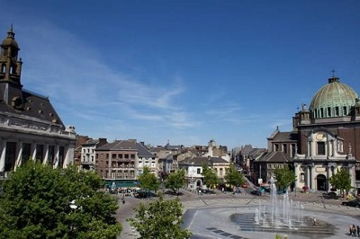
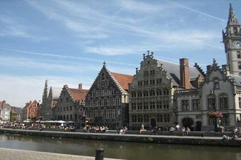
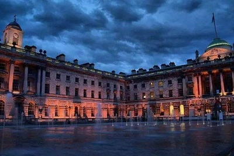
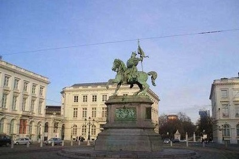
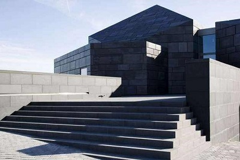
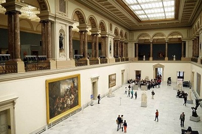
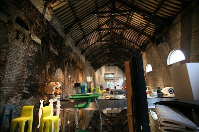
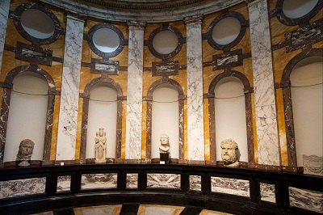

morly旅游网
比利时王国（荷兰语：België，法语：Belgique，德语：Belgien），简称“比利时”，位于欧洲西部沿海，东与德国接壤，北与荷兰比邻，南与法国交界，东南与卢森堡毗连，西临北海与英国隔海相望。海岸线长66.5公里。全国面积2/3为丘陵和平坦低地，全境分为西北部沿海佛兰德伦平原、中部丘陵、东南部阿登高原三部分，最高点海拔694米，主要河流有马斯河和埃斯考河，属海洋温带阔叶林气候，四季明显。
古代凯尔特人和比利其人在此居住。后长期被罗马人、高卢人、日耳曼人分割统治。14~15世纪归属勃艮第公国。 [2] 后被西班牙、奥地利、法国统治。1815年并入荷兰。1830年10月4日独立。比利时是19世纪初欧洲大陆最早进行工业革命的国家之一，无论是地理上还是文化上，都处于欧洲的十字路口。国土面积虽不大，但各具特色的旅游景点遍布全国。首都布鲁塞尔不仅有闻名于世的滑铁卢古战场，也是欧盟与北约的总部所在地。
比利时是一个高度发达的资本主义国家，外贸为其经济命脉，是世界十大商品进出口国之一，全国GDP的大约三分之二来自出口。比利时拥有极其完善的港口、运河、铁路以及公路等基础设施，为与邻国更紧密的经济整和创造条件，比利时是欧盟和北约创始会员国之一，也是联合国、世界贸易组织等国际组织的成员国。
比利时位于欧洲西部，北邻荷兰，东连德国，东南连卢森堡，南部和西部与法国接壤，西北濒临北海。陆地面积30528平方公里（包括在荷兰境内的飞地──巴勒－埃尔东），领海及专属经济区3462平方公里，海岸线长66.5公里。
沙勒罗瓦
是美与丑的绝妙混合，它拥有许多美丽的建筑物却任其自然风化，破旧的建筑让人们忘记了往昔的美丽。同时兼有建筑艺术的崭新和破落之美，对此黑村的人们并没有给予应有的重视。您只能自己去发现（或者成为这些房屋的主人……还可以做生意）。这也是黑村人热情好客的一种方式。
 查理二世广场
位于上城的这个广场保留了最初的格局，并依原样再造了外观。这是星状的军事建筑遗迹。最初的布局出自于西班牙时代工程师万艾斯和德让·布郎依之手。（后者是比利时军事工程师，不仅将这种格局用于沙勒罗瓦，还用于奥斯唐德欧德那德和柯斯）。其后，乌邦也采用了上法。查理二世广场这是30年代的杰作，上面落了一层厚厚的黑尘。市政府大楼为梯形，高贵典雅、精雕细琢。主建筑表面形状抽象，凝结了大量劳动。相对而言，沙勒罗瓦是一个年轻的城市，并未经历过钟楼时代。因此高明的建筑师斯扎尔，添加了一个钟楼，中心偏移，从而留有余地，主建筑外观对称。
 玻璃博物馆
玻璃博物馆/Musee du Velre，德枫丹大街10号/Boulevard Defontaine，沙勒罗瓦曾是世界玻璃制品中心，所以这个博物馆有可能是最漂亮最有趣的。大量的装饰艺术风格作品，玻璃阶梯，5000年的熔沙……
 摄影博物馆
摄影博物馆/Musee de la Photographie 保罗·帕斯图尔大街，11号/Avenue Paul Pastur，马奇安峰/Mont-sur-Marchienne，周二～周日10点～18点开放，比利时唯一专专供摄影展的地方，从摄影发明到最新摄影技术展示了摄影发展的全部历史，经常展出初步摄影尝试，老摄影设备。临时展览登在布鲁塞尔报纸上登出。
 内容整理至网络，如有侵权，请联系我们！1255394075@qq.com